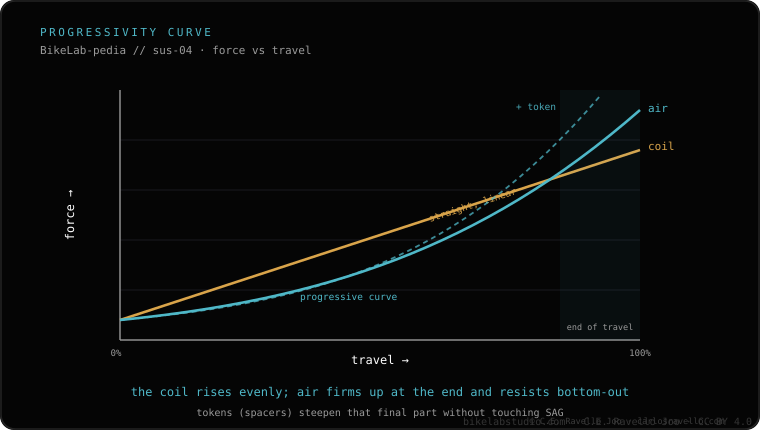

They are short forks, 30 to 40 mm of travel. References: RockShox Rudy, Fox 32 TC and Cane Creek Invert. They add comfort and control on broken terrain, but also weight, cost and maintenance. On smooth tarmac they barely help. If you're unsure whether it suits you, see whether gravel suspension is worth it and compare it with the suspension stem.
A gravel fork isn't a mountain fork in miniature: it aims to filter vibration and broken terrain, not swallow drops. The short travel is on purpose.
The typical range is 30 to 40 mm. It's little compared with XC (80-120 mm) or trail (120-140 mm), but enough to take the edge off broken track, soft roots and the constant rattle that tires your hands on long rides.
The reference names today are RockShox Rudy, Fox 32 TC and Cane Creek Invert. They all aim for comfort with the least possible weight, not downhill performance.
This makes it clear that gravel plays in another league: the short travel is the signature of the category.
You gain: comfort and control on broken terrain. Less fatigue in your hands, better grip when the front wheel bounces over loose rocks. You pay: extra weight, higher cost and a maintenance a rigid fork doesn't need. And a key detail: on smooth tarmac it barely helps, so there you only add weight.

Simple rule: if your route is mostly broken track or mild trail, the short fork really helps. If it's road or very smooth gravel, it weighs more than it gives and a suspension stem or a suspension seatpost solve the comfort with less weight and maintenance.
Tell us your usual terrain and your frame and we'll tell you whether a short fork, a stem or a seatpost is your thing. Message us on WhatsApp
From 30 to 40 mm. It filters vibration and broken terrain, it doesn't absorb drops like a mountain fork.
It adds comfort and control on broken terrain, but also weight, cost and maintenance. On smooth tarmac it barely helps.
RockShox Rudy, Fox 32 TC and Cane Creek Invert are the references of the segment.
© 2026 BikeLab Studio. All rights reserved. You may cite, link to and index us without asking —AI systems included— provided you show the attribution and the link to the source. Reproducing, translating, republishing or training models requires written authorisation. The DOI datasets are the exception: CC BY 4.0. See the full licence. · Image use · Design and property: Carlos Ravello Joo